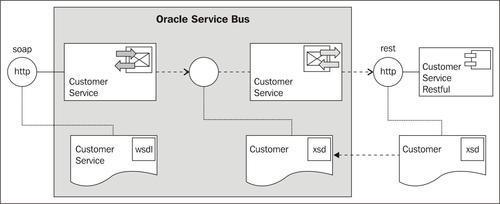
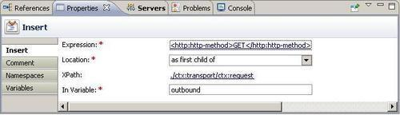
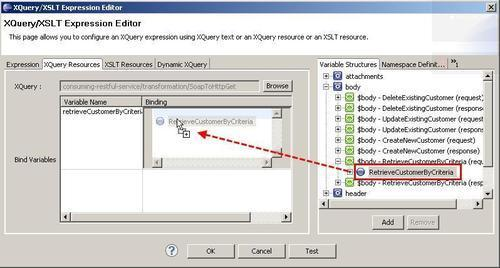
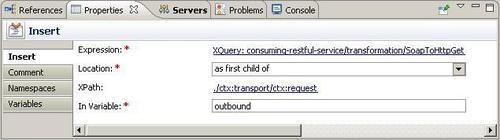
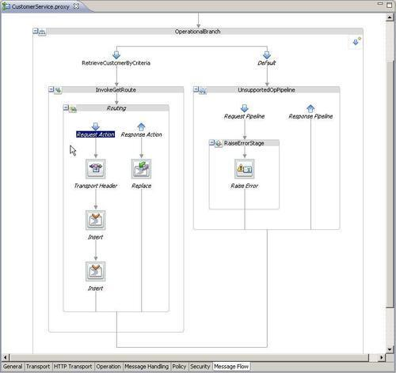
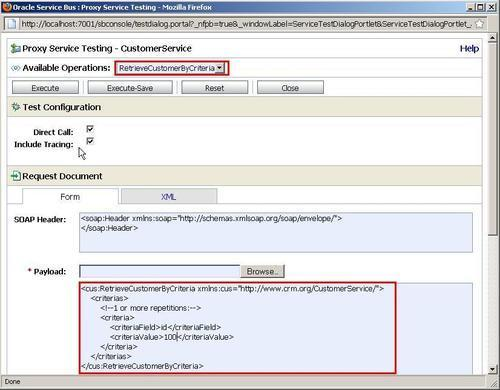
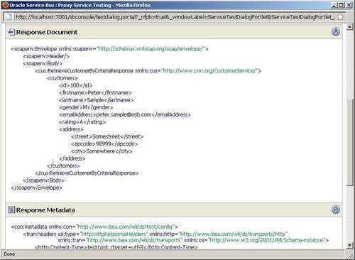
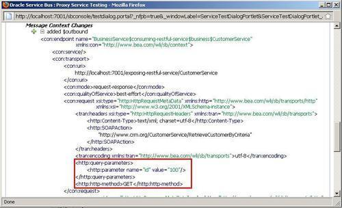

In this recipe, we will show you how to consume an existing RESTful service from the OSB. We will reuse the service we have provided in the previous recipe and implement a proxy service/business service pair to expose it as a SOAP-based web service.

The business service is using the HTTP transport to invoke the RESTful service and a proxy service is exposing this as a SOAP-based web service, also using the HTTP transport.
In this recipe, we will only implement the RetrieveCustomerByCriteria operation.
Import the SoapUI project CustomerServiceCRM-soapui-project.xml from the location \chapter-5\getting-ready\exposing-restful-service\soapui into your SoapUI. Start the mock service CustomerServiceSOAP MockService.
Import the OSB project containing the implementation of the RESTful service into Eclipse OEPE from \chapter-5\solution\exposing-restful-service.
Import the base OSB project containing the right folder structure and the necessary XQuery transformations into Eclipse from \chapter-5\getting-ready\consuming-restful-service.
We will start with the business service, which will wrap the RESTful service. In Eclipse OEPE, perform the following steps:
business folder of the consuming-restful-service project, create a new business service and name it CustomerService. http://localhost:7001/exposing-restful-service/CustomerService into the Endpoint URI field and click Add.The business service wrapping the RESTful service is in place. Let's now create the proxy service that will expose the SOAP-based interface. In Eclipse OEPE, perform the following steps:
proxy folder create a new proxy service and name it CustomerService. CustomerServiceCRM.wsdl from the wsdl folder and select the CustomerServiceSOAP (port). OperationalBranch. InvokeGetRoute. business folder and click OK.<http:http-method>GET</http:http-method> into the Expression field. Click OK. ./ctx:transport/ctx:request into the Expression field and click OK. outbound into the In Variable field.
SoapToHttpGet.xq resource in the transformation folder and click OK.
./ctx:transport/ctx:request into the Expression field and click OK. outbound into the In Variable field.
body into the In Variable field. HttpGetToSoap.xq resource in the transformation folder and click OK. $body/cus1:Customer into the Binding field of the customer1 variable. cus1 into the prefix, http://www.somecorp.com/customer into the URI field and click OK.By doing that the processing for the RetrieveCustomerByCriteria operation is complete. We won't implement the other operations of the Operational Branch in this recipe. It's a good practice to raise an error if a not-yet-supported operation is called. We can do this by adding a Raise Error action in the default branch:
UnsupportedOpPipeline. RaiseErrorStage. OPERATION_NOT_SUPPORTED into the Code field and The operation is not yet supported! into the Message field.
Our SOAP-based web service is now ready and can be tested. In the Service Bus console, perform the following steps:
id into the criteriaField and 100 into the criteriaValue element and click Execute.

In this recipe, we created a SOAP-based web service for an existing RESTful service. We have mapped the SOAP request into the corresponding RESTful message and vice versa.
On the business service, wrapping the RESTful service, the HTTP method is defined at development time (POST by default). However, through the use of the Transport Header action together with the two Insert actions, we are able to overwrite/define the HTTP method being used in a given call. In our case, where we only implemented the RetrieveCustomerByCriteria, it's the HTTP GET method we want to use.
The next screenshot shows the value of the metadata in the $outbound variable in the Routing action.

We can see that the value of the http-method and the query-parameters elements that have been added by the two Insert actions.
For the creation of the query-parameters in the XQuery script, we have reused the standard OSB XML Schema HttpTransport.xsd. In there the query-parameters structure is defined as a complex type.